大连交通大学 · 智能建造23
我的原作瓶盖的可控剪切破坏
肖时钰
一、力学问题表达：受弯构件的弯曲问题
意义：受弯构件（如梁、板）在荷载作用下发生弯曲变形，是工程结构中最常见的力学行为。弯曲问题直接影响结构的承载力、刚度和安全性。例如，过度弯曲会导致构件开裂、变形过大甚至破坏。
影响因素：
• 跨度（L）：根据《结构设计原理》中式（3-7）和表7-1，梁的挠度与跨度的四次方成正比（对于均布荷载），即跨度增加一倍，挠度增大16倍。因此，减小跨度是提高刚度的有效方法。
• 截面形状：如《结构设计原理》中第3章所述，截面形状影响面积二阶矩（I）。例如，工字形截面比矩形截面有更大的I，从而减小变形（《结构设计原理》图3-2和例3-1）。
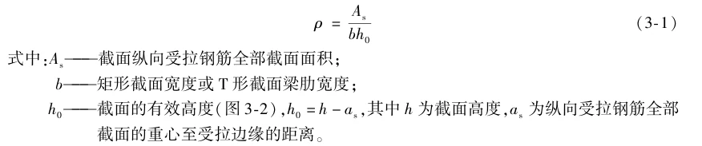
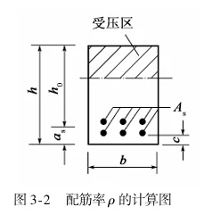
• 材料强度：混凝土和钢筋的强度设计值（如《结构设计原理》附表1-1和1-3）影响抗弯承载力。
• 荷载类型：集中荷载或分布荷载导致不同的弯矩分布（《结构设计原理》式4-3和4-4）。
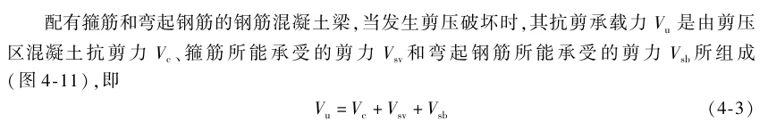
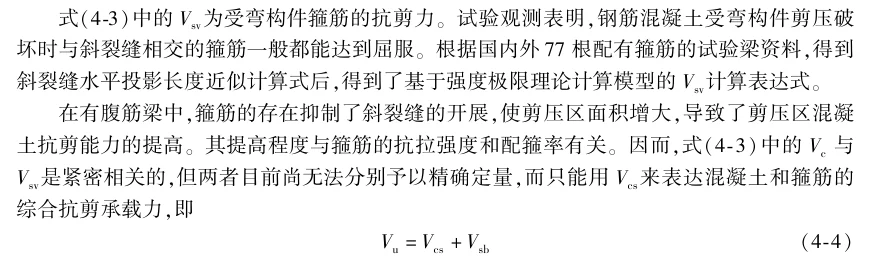
趋势：
• 挠度随跨度增加而急剧增大（《结构设计原理》式3-7）。
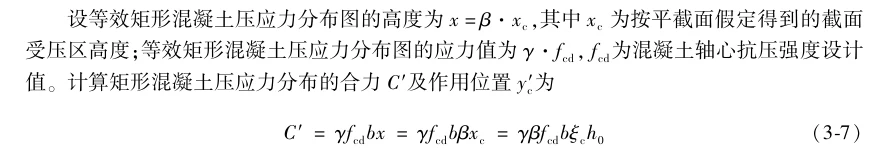
• 通过优化截面形状（如采用T形截面）或增加支承（如《结构设计原理》第7.4节支柱）可减小变形。
力学图示：
假设一个简支梁受均布荷载的弯曲示意图（基于《结构设计原理》图3-1和4-1）：
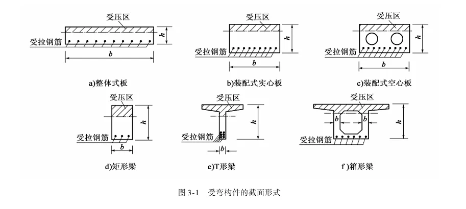
• 梁跨度L，受均布荷载q，产生弯矩图呈抛物线，最大弯矩在跨中。
• 变形曲线：梁下缘受拉，上缘受压，中性轴附近无应变。
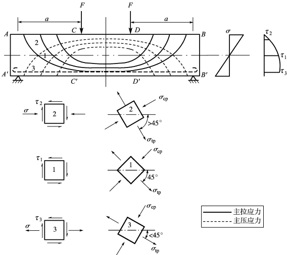
二、生活中体现：案例1 - 椅子腿的受弯设计
照片显示一把常见的椅子，在椅面上受到压力，椅腿发生轻微弯曲变形。
：
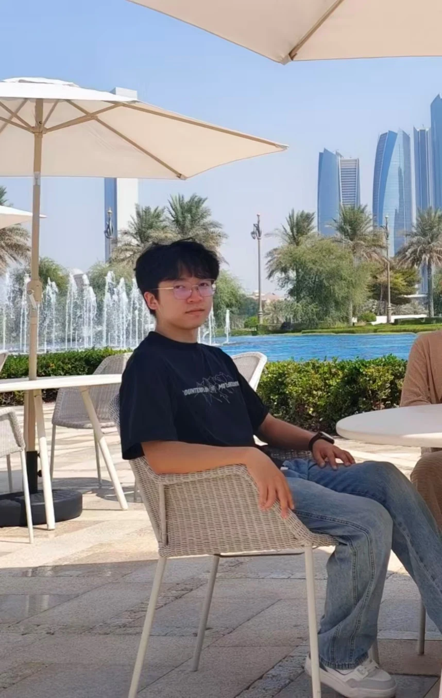
• 荷载P（重物）作用于椅面。
• 椅腿底部为固定支承，产生反力。
• 弯矩图：椅腿根部弯矩最大=
• 变形标注：椅腿向荷载侧弯曲，中性轴位于截面中心。
配文说明：
这把木椅的腿相当于一个悬臂梁（《结构设计原理》第4.3节），当人坐在椅上时，荷载通过椅面传递到腿根部，产生弯矩。椅腿采用矩形截面，但截面高度较小，导致刚度不足，易弯曲。这体现了受弯构件的原理：弯曲变形与跨度（椅腿高度）和截面形状相关。如果椅腿采用工字形截面或增加腿中部支承，可减小变形，提高稳定性。该案例与《结构设计原理》中受弯构件设计原理一致，强调截面优化的重要性。
三、对照《结构设计原理》
对照原理：
• 受弯构件正截面承载力（《结构设计原理》第3章）：椅子腿的弯曲类似于梁的受弯，需满足正截面承载力要求。《结构设计原理》式（3-13）至（3-15）给出了承载力计算，其中截面高度h₀和钢筋配置（如纵筋）影响抗弯能力。椅子腿为木质，无钢筋，但原理相通：增大截面高度或采用强化材料可提高承载力。
• 截面形状优化：《结构设计原理》第3.6节指出，T形截面能有效提高I值，减小变形。椅子腿若改为工字形或增加肋板，可优化性能，这与《结构设计原理》例3-1中截面比较一致。
• 构造要求：《结构设计原理》第3.1.2节强调钢筋布置（如保护层、间距），对于椅子，需确保腿与座面连接牢固，避免剪切破坏（《结构设计原理》第4章）。
案例借鉴说明：本案例借鉴《结构设计原理》中受弯构件原理
四、生活中体现：案例2 - 瓶盖开启的扭转设计
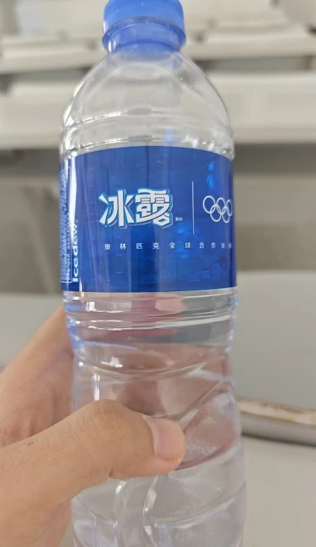
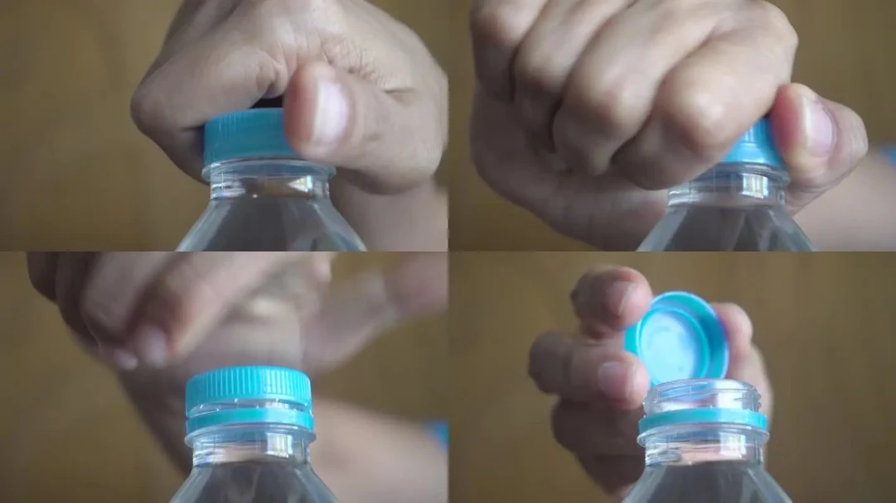
照片显示一个塑料饮料瓶，瓶盖处于未开启状态。：
• 扭矩T：手部施加的扭转力。
• 剪应力分布：瓶盖与瓶口连接处产生剪应力，导致连接扣剪切破坏（如《感知结构概念》2图5.13a）。
• 变形标注：瓶盖旋转，连接扣发生塑性变形。
配文说明：
瓶盖开启过程涉及扭转力学（《感知结构概念》第5章）。当施加扭矩时，瓶盖与瓶口间的连接扣承受剪应力，当应力超过材料极限时发生剪切破坏（书《感知结构概念》式5.2和例5.2）。
这体现了扭转构件的原理：闭口截面（如瓶盖）比开口截面抗扭刚度大（《感知结构概念》图5.9）
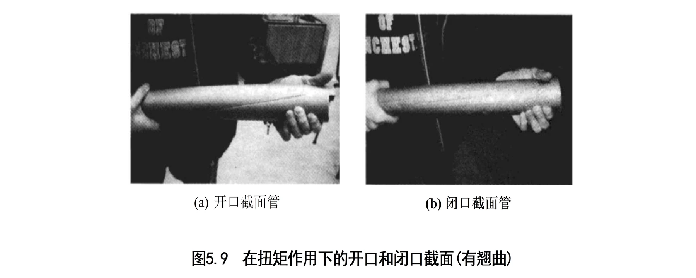
。设计上，瓶盖连接扣的数量和尺寸需平衡开启力与密封性，与《感知结构概念》第5.4.3节开启饮料瓶案例一致。
五、对照《结构设计原理》内容
对照原理：
• 扭转剪应力（《感知结构概念》第5.2.2节）：瓶盖开启相当于圆杆扭转，《感知结构概念》式（5-2）给出了剪应力计算。瓶盖为薄壁闭口截面，抗扭刚度较高（《感知结构概念》例5.2），但连接扣为薄弱点，需控制剪应力。
• 材料强度：《结构设计原理》中材料强度设计值（如fsd）影响抗剪能力，瓶盖塑料的强度决定了开启扭矩。
• 设计应用：《感知结构概念》第5.4.3节提到，连接扣设计需使剪切破坏发生在预定扭矩下，确保易开启性。这与瓶盖设计理念吻合。
案例借鉴说明：本案例借鉴书《感知结构概念》中扭转原理，但以日常瓶盖为例，未在课堂案例中介绍。
总结
通过椅子腿和瓶盖案例，将《材料力学》和《结构设计原理》中的构件（受弯、扭转构件）和原理（如截面优化、应力分布）与生活现象结合。这体现了力学在设计中的重要性：合理配置几何参数和材料可提高结构性能。
这是一份便于网页阅读的原作视图，保留提交内容的文字、图片和基本顺序；公开页面不显示学号。